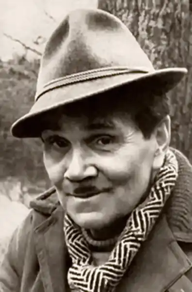
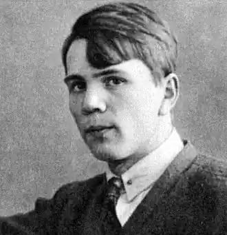

Льонька Пантелевв — "сищиків гроза"
Для Петрограда роки Громадянської війни були майже такими ж страшними, як для Ленінграда роки Блокади. Населення колишньої імператорської столиці зменшилася в п'ять разів. Жахливий голод, холод, розруха. В середині 1922 року місто дивним чином починає одужувати: НЕП, приватна торгівля, омари у вітринах колишнього Єлисеєвського магазину, модниці в ресторані "Дах" Європейської готелі, ошатна юрба на Невському.
Блиск, розкіш і різкий зліт злочинності. Кримінальний світ Петрограда був неймовірно пестр і різноманітний. Шуміли банди Ваньки Чавуну, Вови Матроса, Ваньки Білки, Васі Котика. Лиговка покрита злодійських малинами. Навесні 1922 року в Петрограді щомісяця відбувалося від 40 до 50 озброєних нальотів. У наш, не найбідніше час, мало хто любить "нових" росіян. А тоді, у 20-ті роки, яке могло бути ставлення до непманів у пітерського робітника, який повернувся з фронту, де він боровся зі світовою буржуазією, або у чекіста, який ставив недавно "контру" до стінки? За що боролися, товариші? За що кров проливали? Ось таким фронтовиком і чекістом був Леонід Пантєлкін, відомий нам, як Льонька Пантелєєв. На початку 20-х років Радянська влада ще намагалася застосовувати до злочинців класовий підхід і ті нерідко могли розраховувати на поблажливість. Деякі теоретики марксизму заявляли, що якщо крадіжка йде на користь трудящим, то не є злочином. А для втомленого від злиднів обивателя политбандиты представлялися новими Робін Гудами, які відбирають у багатих і віддає бідним. Так хто ж він такий, справжній Леонід Пантелєєв? Леонід Пантєлкін (справжнє прізвище Пантелєєва) народився в 1902 році в Петербурзі, в родині робітника. Закінчив початкову школу і професійні курси, де отримав престижну спеціальність друкаря-складача. Добре вмів читати і писати, захоплювався книжками, серед робітників славився грамотія. У 1919 році Пантєлкін, який не досяг призовного віку, вступив добровольцем в Червону Армію і відправився на Нарвський фронт. Брав участь в боях з армією Юденича, потрапив у полон, звідки втік і знову воював за червоних. Потім частина, в якій служив Пантєлкін, передали у підпорядкування ВЧК і перекинули на Псковщину для боротьби з бандитизмом в прикордонній смузі.Влітку 1921 року Леонід Пантєлкін був прийнятий на посаду слідчого у Військово-Контрольну частину дорожньо-транспортної ЧК Північно-Західних залізниць. Але вже в жовтні він був понижений у посаді, а у січні 1922 року звільнений з лав ВЧК. Офіційне формулювання — за скороченням штатів. Довгий час радянська література з зрозумілих причин замовчувала про те, що бандит Льонька Пантелєєв колись був чекістом. Але до цих пір залишається таємницею причина його звільнення з органів. За першою, політичної, версії, Пантелєєв був лівим радикалом і виступав проти Нової економічної політики. За кримінальною версії, чекіст був нечистий на руку і навіть підозрювали в участі у бандитському нападі, арештовано, але випущено за відсутністю доказів. Насправді, обидві версії не суперечать один одному. Після роботи в ЧК, Пантелєєв точно також продовжував боротися з Непом і непманами, але по-своєму. Пішов цілий ряд гучних нальотів. Пограбування хутровика Богачова, доктора Грильхеса, торговця Анікєєва, власниці трактиру Ищес, артільника Манулевича. У всіх випадках обійшлося без жертв, нальоти були ретельно обдумані і проводилися за наводкою. Льонька користувався чималим успіхом серед покоївок, домробітниць, які охоче розповідали про те, де зберігаються скарби їх господарів. Льонька видобуток продавав, на виручку гуляв і охоче роздавав, всім кому не попадя. Типовий благородний розбійник. Неабияка популярність Льоньки Пантелєєва починає серйозно турбувати міські влади. Хоча його банда була не самою численною і кровожерливою, зате ватажок Льонька ставав об'єктом для наслідування. Спалах бандитизму в Петербурзі тягне за собою посилення діяльності правоохоронних органів. ГПУ отримує право розстрілювати грабіжників і бандитів на місці злочину. На Пантелєєва влаштовується справжня облава. У вересні 22-го його абсолютно випадково і навіть якось безглуздо впіймали разом з найближчим другом-подільником Дмитром Гавриковым. Під посиленою охороною Пантелєєва і Гаврикова доставили у 3-ій Исправдом, більш відомий як слідчого ізолятора "Хрести". Через пару днів в облавах, влаштованих міліцією і ГПУ, були затримані спільники Пантелєєва, серед яких відомий у місті Ведмедик Кострубатий, справжнє ім'я — Михайло Лисенков, і "Сашка-Пан" справжнє ім'я Олександр Рейнтоп. Слідство вів досвідчений чекіст СергейКондратьев. У 1926 році він опублікував в журналі "На посту" свої спогади про розмови з Льонькою Пантелєєвим. Льонька охоче відповідав на всі питання. Розповів, що практично всі нальоти його банда здійснювала за допомогою навідників. А хто кращий навідник? Звичайно ж, жінка. "Кожна навідниця — моя співмешканка. Це вигідно, тому що з нею не потрібно ділитися. Вона ніколи не видасть. В подяку за вдале справа подаруєш їй який-небудь дрібничка — колечко, хутряне пальто, шаль, і вона тобі труну віддана". Допити Льоньки Пантелєєва проводилися в будівлі управління ГПУ на вулиці Бродського. На останньому допиті, Пантелєєв, вже йдучи в камеру сказав слідчому: "Ну, бувайте, дорогий товаришу! Більше не побачимося. Скоро покину я ваш исправдом, втечу, ось!. Слідство тривало три тижні і 10 листопада 1922 у залі Петроградського Трибуналу розпочався суд над бандою Льоньки Пантелєєва. Зал був переповнений. Найрізноманітніша публіка — від дрібного злодюжки до багатого власника магазину, з цікавістю розглядала тих, хто так довго і так багато змушував про себе говорити. Підсудні виглядали впевнено і навіть сміялися. Дивлячись на Пантелєєва, глядачі шепотілися, що Льонька напевно втече. Тому що не може фартовий здатися так просто. Втекти з будівлі суду було неможливо. Підсудні пов'язані ланцюгом і оточені посиленим загоном конвоїрів. Револьвери на приготуванні, шашки наголо. По закінченні засідання суду, всіх перепровадили в Исправдом. Важкі двері Хрестів закрилися, бандитів розвели по окремих камерах. Але в ніч на 11 вересня 1922 року, в День Міліції, в Петербурзьких Хрестах сталося те, що трапляється тут вкрай рідко — втеча ув'язнених. За все ХХ століття з цієї в'язниці вдавалося втекти всього 5 разів, і першим втекли і був якраз Льонька Пантелєєв. Про зухвалого небувале втечу Пантелєєва та його спільників стає відомо всьому місту. Особливо прикро правоохоронцям — зграя бігла в День Міліції. Смольний в люті. Григорій Зінов'єв обіцяв віддати трибуналу керівництво ОГПУ і Карного розшуку, якщо небезпечний грабіжник не буде негайно спійманий. Популярність Пантелєєва досягає надзвичайного рівня. Після втечі з Хрестів банда Пантелєєва скоїла 11 вбивств, 23 грабежів, 15 озброєних нальотів. У лютому 1923 року органи ДПУ имилиции по всьому місту влаштовували облави — одна з них на Можайськой вулиці, була перестрілка, де Льонька і був убитий молодим співробітником ударної групи ГПУ Іваном Бусько. Потім в ході інших облав були спіймані і інші члени банди. 6 березня 1923 року Військовий трибунал виніс вирок у справі учасників банди Пантелєєва. 17 нальотчиків і посібників, з них 5 жінок засудили до розстрілу. Залякані одним ім'ям Пантелєєва петроградцы не вірили у смерть бандита, і тоді влада міста пішла на безпрецедентний крок…. У будівлі Обухівської лікарні простяглася величезна черга, її довгий хвіст залучав цікавих. Сотні людей обговорювали останні новини, всі були порушені. Уздовж черги прогулювалися люди в штатському, пильно оглядаючи стоять. В них без праці вгадувалися співробітники ГПУ. Власті Петрограда єдиний раз в історії міста пішли на екстраординарну міру — в морзі Обухівської лікарні був виставлений на загальний огляд труп знаменитого злодія і бандита Льоньки Пантелєєва. Подивитися на короля Лиговской панелі прийшли тисячі петроградцев. У приміщенні моргу, де лежало "відреставрована тіло", чергували троє досвідчених співробітників ГПУ, переодягнених у медичні халати. Вони повинні були стежити як реагують "цікаві". У ГПУ вважали, що хтось з колишніх співтоваришів Льоньки міг прийти на оглядини. Однак рідними та близькими покійного труп так і не був пізнаний. А в Петрограді ще довго відбувалися напади і грабежі від імені Льоньки Пантелєєва. В Обухівській лікарні історія знаменитого бандита не закінчилася. Можна сказати, вона тільки починалася — Пантелєєв літературний персонаж. Вже тоді в 23-му році, нині забута, але тоді досить популярна, поетеса Єлизавета Полонська написала поему "В зашморгу", де Льонька Пантелєєв — головний герой. Доля Леоніда Пантелєєва могла скластися зовсім інакше. У традиційному, усталеному, розміреному суспільстві доля людини визначається місцем його народження і походженням. На що міг розраховувати така людина, як Льонька Пантелєєв до революції? Та ні на що. Він, мабуть, так би і помер звичайним робітником. Але ось час змінилося. 17-ий рік. Долі людей змінюються феєрично. І ось такий твердий, вольовий, кмітливий хлопець, як Льонька Пантелєєв, отримує шанс, як і багато інші.